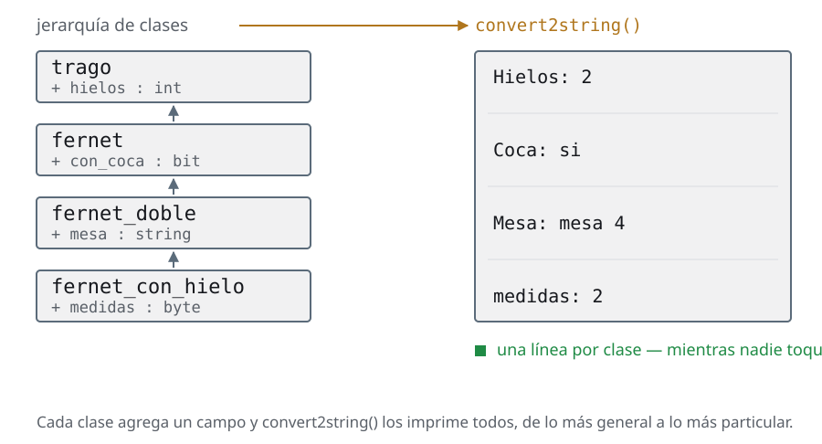
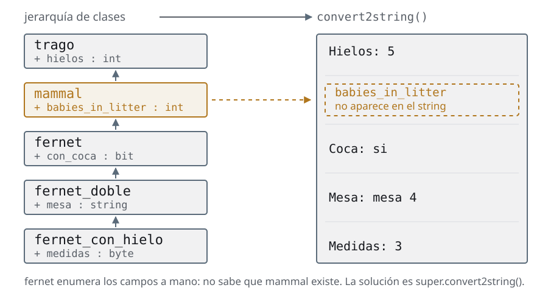

Día 5El dato
Las mismas slides del deck, con las notas del instructor adentro del texto y el código completo. Si estás haciendo el curso solo, empezá por acá y tené el deck al lado para los repasos.
Agenda
Día 5 · ≈ 4 h · unidad 6 · el dato
- Copiar un objeto que contiene otro
- Transactions
- Constrained random
Copiar un objeto que contiene otro
El handle no es el objeto
- Desde las transactions los datos del testbench dejan de ser una
structy pasan a ser objetos que viajan: el monitor los crea, el scoreboard los compara - Y ahí aparece un problema que una
structno tenía. Unastructse copia al asignarla; un objeto no:obj1_h = obj2_hcopia el handle, no los datos - O sea que dos partes del testbench pueden estar mirando el mismo objeto sin saberlo. Si una lo modifica, la otra ve el cambio a mitad de camino
- Copiarlo de verdad hay que escribirlo, y escribirlo en cada nivel de la jerarquía, o los campos de arriba se pierden en silencio
- Esta sección es la OOP que falta para que las transactions se puedan copiar, comparar e imprimir sin mentir
Es una sección de OOP en el medio de UVM, y conviene decir por qué está acá y no
en el día 2: porque recién ahora hace falta. Hasta reporting —el cierre del día
3— los datos eran una struct y se copiaban solos.
El bug del segundo bullet lo escribe todo el mundo una vez, y el síntoma es
horrible: mandás una transaction al scoreboard, seguís usando el mismo handle para
la siguiente, la modificás, y el scoreboard compara contra datos que cambiaron
después de que él los recibió. No falla siempre, y cuando falla parece un bug del
DUT.
La otra mitad —el super en cada nivel— tiene un síntoma distinto y más
traicionero: el día que alguien mete una clase nueva en el medio de la jerarquía,
el convert2string() deja de imprimir la mitad de los campos y nadie se
entera, porque sigue imprimiendo algo.
La pregunta para arrancar: si handle_a = handle_b, ¿cuántos objetos hay? Uno. Es
la misma pregunta de clases y extensiones, ahora con consecuencias.
Copiar un objeto que contiene otro
Nunca dupliques código
“Si nos encontramos copiando código y haciéndole pequeñas modificaciones dentro de nuestro programa, estamos haciendo las cosas mal. Nunca hay que duplicar código.”
En OOP en vez de copiar código...
extendemos clases
Copiar un objeto que contiene otro
convert2string(): el problema

- La jerarquía va de lo general a lo particular, y cada clase agrega campos propios
- Queremos dos cosas de ella: poder copiar un objeto entero e imprimirlo entero, sin que se pierda nada de los niveles de arriba
- Esta primera versión funciona. Contá cuántas veces aparece el nombre de un campo de la clase base
code/u6/jerarquias/pre_convert2string.sv// Wrong Way de hacer convert2string!
//class trago;
virtual function string convert2string();
return $sformatf("Hielos: %0d", hielos);
endfunction : convert2string
//class fernet extends trago;
function string convert2string();
string coca_s;
coca_s = (con_coca) ? "si" : "no";
return sformat("Hielos: %0d Coca: ",hielos, coca_s);
endfunction : convert2string
//class fernet_doble extends fernet;
function string convert2string();
return {$sformatf("hielos: %0d coca: %0b mesa: %s",
hielos, con_coca, mesa) };
endfunction : convert2stringEsta versión funciona, y ése es el problema: se ve bien y está mal. Cada
convert2string() imprime a mano todos los campos, incluidos los que heredó.
Andá al $sformatf de la clase de más abajo y contá cuántas veces se repite el
nombre de un campo de la clase de arriba. Cada una de esas repeticiones es una
línea que hay que acordarse de tocar el día que se agregue un campo.
La pregunta que arma la slide siguiente: ¿qué pasa si mañana alguien mete una
clase nueva en el medio de la jerarquía? Los de abajo siguen imprimiendo lo
que sabían, la del medio no aparece, y no hay error. El método sigue devolviendo
un string.
Copiar un objeto que contiene otro
convert2string(): la versión deep

- El día que alguien mete una clase en el medio, los de abajo siguen imprimiendo lo que sabían y la del medio no aparece. Y no hay error: el método sigue devolviendo un string
- La regla que lo arregla: cada clase imprime sólo lo suyo y le pide el resto a
super - Nadie sabe qué hay más arriba, así que insertar un nivel no rompe nada
code/u6/jerarquias/pre_convert2string_ok.sv//virtual class trago;
virtual function string convert2string();
return $sformatf("Hielos: %0d", hielos);
endfunction : convert2string
//class con_alcohol extends trago;
function string convert2string();
return {super.convert2string(),
$sformatf("\ngraduacion: %0d",graduacion)};
endfunction : convert2string
//class fernet extends con_alcohol;
function string convert2string();
string coca_s;
coca_s = (con_coca) ? "si" : "no";
return {super.convert2string(), "\nCoca: ",coca_s};
endfunction : convert2stringLa regla, corta: cada método de la jerarquía se ocupa sólo de sus propios
campos y le pide el resto a super. Nadie sabe qué hay más arriba, y por eso
insertar una clase en el medio no rompe nada.
El patrón se repite igual en los tres métodos de la sección —convert2string(),
do_copy(), do_compare()— y también en los tres de UVM. Si te acostumbrás a
escribir la llamada a super primero, antes de tocar tus campos, no te la
olvidás nunca.
Vale la pena señalar el paralelo con algo que ya vieron: es exactamente el mismo
argumento que el super.new() de clases y extensiones. La parte de arriba del objeto
también hay que construirla — y también hay que imprimirla, copiarla y
compararla.
Copiar un objeto que contiene otro
El signo igual no copia nada
obj1_h = obj2_hno copia nada: deja dos handles apuntando al mismo objeto- Si lo modificás por uno, el otro lo ve. No hay aviso, no hay warning
- Con una
structeso no pasaba: se copia al asignarla. Es la diferencia que hay que tener presente desde acá hasta el final del curso
Copia el handle, no el objeto. Es el bug que todos escriben una vez: modificás la transaction que ya mandaste al scoreboard y el scoreboard ve el cambio a mitad de camino. De acá sale el clone() de las transactions.
Copiar un objeto que contiene otro
Copiar de verdad son dos pasos
Copiar de verdad son dos pasos, y hay que escribirlos: instanciar un objeto nuevo y pasarle los datos campo por campo
code/u6/jerarquias/pre_copy.svinitial begin
fernet_hielo1_h =
new(.hielos(2), .con_coca(1), .graduacion(2), .mesa("mesa 4"), .medidas(2));
$display("\n--- Fernet 1 ---\n", fernet_hielo1_h.convert2string());
fernet_hielo2_h = new();
$display("\n--- Fernet 2 before the copy ---\n", fernet_hielo2_h.convert2string());
// do_copy is a method that copies member by member
// it suffers from the same problem already seen with convert2string()
// Each class can copy the variables defined in that class
// super.do_copy() has to be used to copy the inherited ones
fernet_hielo2_h.do_copy(fernet_hielo1_h);
$display("\n--- Fernet 2 after the copy ---\n", fernet_hielo2_h.convert2string());
end- El
new()es el primer paso y no es opcional: sin un objeto nuevo del otro lado, no hay adónde copiar - El segundo paso es a mano, campo por campo. SystemVerilog no tiene una copia profunda incorporada
- Y campo por campo quiere decir también los de las clases de arriba, que es justo lo que se olvida
Vale hacer la comparación con la asignación de la slide anterior en voz alta:
a = b es una línea y no copia nada; copiar de verdad son dos pasos y hay que
acordarse de los dos.
Que el lenguaje no traiga la copia profunda no es un olvido del comité: no
existe una respuesta general. Si la clase tiene un handle a otro objeto,
¿copiás el handle o el objeto? Depende, y por eso lo tenés que decidir vos en
cada do_copy().
Es exactamente el mismo dilema que van a tener las transactions
si algún día llevan un array de objetos adentro. En este curso no pasa, pero
conviene que la pregunta quede planteada.
Copiar un objeto que contiene otro
do_copy(): cada clase toca lo suyo
do_copy(): Cada clase en la jerarquía, debe llamar a su clase superior, por lo tanto, todos los métodos do_copy() necesitan el mismo tipo de argumento. Pero tenemos clases distintas... Usamos polimorfismo
code/u6/jerarquias/pre_copy2.sv · líneas 24-45 de 46class fernet_con_hielo extends fernet_doble;
byte medidas;
function new(int hielos = 0, bit con_coca = 0, int graduacion = 0,
string mesa = "", byte medidas = 0);
super.new(hielos, graduacion, con_coca, mesa);
this.medidas = medidas;
endfunction : new
function string convert2string();
return {super.convert2string(), "\n", $sformatf("medidas: %0d", medidas)};
endfunction : convert2string
//do_copy passes the argument up to its parent class
function void do_copy(trago copia);
fernet_con_hielo copia_fernet_con_hielo;
super.do_copy(copia);
// Then the copy gets cast to a variable of its own class type
$cast(copia_fernet_con_hielo, copia);
this.medidas = copia_fernet_con_hielo.medidas;
endfunction : do_copy
el archivo entero, 46 líneas
class fernet_doble extends fernet;
string mesa;
function new(int hielos = 0, int graduacion = 0, bit con_coca = 0,
string mesa = "");
super.new(hielos, graduacion, con_coca);
this.mesa = mesa;
endfunction : new
function string convert2string();
return {super.convert2string(), "\nMesa: ", mesa};
endfunction : convert2string
// Polymorphism: do_copy takes a class derived from trago as its argument
// so the trago class is what gets used as the argument type
function void do_copy(trago copia);
fernet_doble copia_fernet_doble;
super.do_copy(copia);
$cast(copia_fernet_doble, copia);
this.mesa = copia_fernet_doble.mesa;
endfunction : do_copy
endclass : fernet_doble
class fernet_con_hielo extends fernet_doble;
byte medidas;
function new(int hielos = 0, bit con_coca = 0, int graduacion = 0,
string mesa = "", byte medidas = 0);
super.new(hielos, graduacion, con_coca, mesa);
this.medidas = medidas;
endfunction : new
function string convert2string();
return {super.convert2string(), "\n", $sformatf("medidas: %0d", medidas)};
endfunction : convert2string
//do_copy passes the argument up to its parent class
function void do_copy(trago copia);
fernet_con_hielo copia_fernet_con_hielo;
super.do_copy(copia);
// Then the copy gets cast to a variable of its own class type
$cast(copia_fernet_con_hielo, copia);
this.medidas = copia_fernet_con_hielo.medidas;
endfunction : do_copy
endclass : fernet_con_hieloAcá está el detalle que parece burocrático y no lo es: todos los do_copy()
de la jerarquía reciben un argumento de la clase base, no de la suya. Si cada
uno recibiera su propio tipo, la llamada a super.do_copy(rhs) no compilaría —
los tipos no coincidirían.
El precio es que adentro de cada método hay que hacer $cast para poder leer los
campos propios. Y como vimos en la factory, ese $cast chequea en runtime: si
alguien intenta copiar un mojito sobre un fernet, devuelve 0 y hay que
atajarlo.
Es la primera vez que se ve una convención de firma que existe sólo para que el
polimorfismo funcione. En UVM va a ser lo mismo y con más reglas: el argumento se
tiene que llamar rhs, do_compare() recibe además un uvm_comparer, y así.
Cuando en las transactions aparezcan esas firmas, la respuesta a "¿por qué así?" es
esta slide.
Copiar un objeto que contiene otro
Resumen: la solución pésima
code/u6/jerarquias/wrong.sv · líneas 69-79 de 108 function string convert2string();
return {
$sformatf(
"hielos: %0d coca: %0b mesa: %s medidas: %0d",
hielos,
con_coca,
mesa,
medidas
)
};
endfunction : convert2stringel archivo entero, 108 líneas
virtual class trago;
int hielos = -1;
function new(int a = 0);
hielos = a;
endfunction : new
virtual function string convert2string();
return $sformatf("Hielos: %0d", hielos);
endfunction : convert2string
virtual function void do_copy(trago copia);
hielos = copia.hielos;
endfunction : do_copy
endclass : trago
class fernet extends trago;
bit con_coca;
function new(int hielos = 0, bit con_coca = 0);
super.new(hielos);
this.con_coca = con_coca;
endfunction : new
function string convert2string();
string coca_s;
coca_s = (con_coca) ? "si" : "no";
return sformat("Hielos: %0d Coca: ", hielos, coca_s);
endfunction : convert2string
function void do_copy(trago copia);
fernet copia_fernet;
super.do_copy(copia);
$cast(copia_fernet, copia);
this.con_coca = copia_fernet.con_coca;
endfunction : do_copy
endclass : fernet
class fernet_doble extends fernet;
string mesa;
function new(int hielos = 0, bit con_coca = 0, string mesa = "");
super.new(hielos, con_coca);
this.mesa = mesa;
endfunction : new
function string convert2string();
return {$sformatf("hielos: %0d coca: %0b mesa: %s", hielos, con_coca, mesa)};
endfunction : convert2string
function void do_copy(trago copia);
fernet_doble copia_fernet_doble;
super.do_copy(copia);
$cast(copia_fernet_doble, copia);
this.mesa = copia_fernet_doble.mesa;
endfunction : do_copy
endclass : fernet_doble
class fernet_con_hielo extends fernet_doble;
byte medidas;
function new(int hielos = 0, bit con_coca = 0, string mesa = "", byte medidas = 0);
super.new(hielos, con_coca, mesa);
this.medidas = medidas;
endfunction : new
function string convert2string();
return {
$sformatf(
"hielos: %0d coca: %0b mesa: %s medidas: %0d",
hielos,
con_coca,
mesa,
medidas
)
};
endfunction : convert2string
function void do_copy(trago copia);
fernet_con_hielo copia_fernet_con_hielo;
super.do_copy(copia);
$cast(copia_fernet_con_hielo, copia);
this.medidas = copia_fernet_con_hielo.medidas;
endfunction : do_copy
function void bad_copy(fernet_con_hielo copia_fernet_con_hielo);
medidas = copia_fernet_con_hielo.medidas;
mesa = copia_fernet_con_hielo.mesa;
con_coca = copia_fernet_con_hielo.con_coca;
hielos = copia_fernet_con_hielo.hielos;
endfunction
endclass : fernet_con_hielo
module top;
fernet_con_hielo fernet_hielo1_h, fernet_hielo2_h;
initial begin
fernet_hielo1_h = new(2, 1, "Agnus", 2);
$display("\n--- Fernet 1 ---\n", fernet_hielo1_h.convert2string());
fernet_hielo2_h = new();
$display("\n--- Fernet 2 before the copy ---\n", fernet_hielo2_h.convert2string());
fernet_hielo2_h.bad_copy(fernet_hielo1_h);
$display("\n--- Fernet 2 after the copy ---\n", fernet_hielo2_h.convert2string());
end
endmodule : top- Es el
convert2string()defernet_con_hielo, la clase de más abajo: imprime los cuatro campos a mano, incluidos los tres que heredó - Funciona, y por eso es peligroso. El día que
fernetgane un campo, este método sigue compilando y sigue imprimiendo — de menos - El archivo entero está en
code/u6/jerarquias/wrong.sv, y losdo_copy()tienen el mismo vicio: cada uno toca campos que no son suyos
La regla que hay que dejar: una clase sólo escribe sobre sus propios campos.
Todo lo demás se lo pide a super.
Conviene contar en pantalla: hielos y con_coca aparecen en cuatro
convert2string() distintos de este archivo. Cuatro lugares para acordarse, y
ninguno falla si te olvidás de uno.
Hay una bad_copy() un poco más abajo en el archivo que vale la pena abrir si
sobra tiempo: toma un fernet_con_hielo como argumento en vez de un trago. Compila
y anda... hasta que alguien la llama por un handle de la clase base, y ahí no hay
polimorfismo que valga.
Copiar un objeto que contiene otro
Resumen: la solución deep
code/u6/jerarquias/deep.sv · líneas 47-58 de 117 function string convert2string();
string coca_s;
coca_s = (con_coca) ? "si" : "no";
return {super.convert2string(), "\nCoca: ", coca_s};
endfunction : convert2string
function void do_copy(trago copia);
fernet copia_fernet;
super.do_copy(copia);
$cast(copia_fernet, copia);
this.con_coca = copia_fernet.con_coca;
endfunction : do_copyel archivo entero, 117 líneas
virtual class trago;
int hielos = -1;
function new(int a = 0);
hielos = a;
endfunction : new
virtual function string convert2string();
return $sformatf("Hielos: %0d", hielos);
endfunction : convert2string
virtual function void do_copy(trago copia);
hielos = copia.hielos;
endfunction : do_copy
endclass : trago
class con_alcohol extends trago;
int graduacion;
function new(int a = 0, b = 0);
super.new(a);
graduacion = b;
endfunction : new
function string convert2string();
return {
super.convert2string(), $sformatf("\ngraduacion: %0d", graduacion)
};
endfunction : convert2string
function void do_copy(trago copia);
con_alcohol copia_con_alcohol;
super.do_copy(copia);
$cast(copia_con_alcohol, copia);
graduacion = copia_con_alcohol.graduacion;
endfunction : do_copy
endclass : con_alcohol
class fernet extends con_alcohol;
bit con_coca;
function new(int hielos = 0, int graduacion = 0, bit con_coca = 0);
super.new(hielos, graduacion);
this.con_coca = con_coca;
endfunction : new
function string convert2string();
string coca_s;
coca_s = (con_coca) ? "si" : "no";
return {super.convert2string(), "\nCoca: ", coca_s};
endfunction : convert2string
function void do_copy(trago copia);
fernet copia_fernet;
super.do_copy(copia);
$cast(copia_fernet, copia);
this.con_coca = copia_fernet.con_coca;
endfunction : do_copy
endclass : fernet
class fernet_doble extends fernet;
string mesa;
function new(int hielos = 0, int graduacion = 0, bit con_coca = 0,
string mesa = "");
super.new(hielos, graduacion, con_coca);
this.mesa = mesa;
endfunction : new
function string convert2string();
return {super.convert2string(), "\nMesa: ", mesa};
endfunction : convert2string
function void do_copy(trago copia);
fernet_doble copia_fernet_doble;
super.do_copy(copia);
$cast(copia_fernet_doble, copia);
this.mesa = copia_fernet_doble.mesa;
endfunction : do_copy
endclass : fernet_doble
class fernet_con_hielo extends fernet_doble;
byte medidas;
function new(int hielos = 0, bit con_coca = 0, int graduacion = 0,
string mesa = "", byte medidas = 0);
super.new(hielos, graduacion, con_coca, mesa);
this.medidas = medidas;
endfunction : new
function string convert2string();
return {super.convert2string(), "\n", $sformatf("medidas: %0d", medidas)};
endfunction : convert2string
function void do_copy(trago copia);
fernet_con_hielo copia_fernet_con_hielo;
super.do_copy(copia);
$cast(copia_fernet_con_hielo, copia);
this.medidas = copia_fernet_con_hielo.medidas;
endfunction : do_copy
endclass : fernet_con_hielo
module top;
fernet_con_hielo fernet_hielo1_h, fernet_hielo2_h;
initial begin
fernet_hielo1_h = new
(.hielos(2), .con_coca(1), .graduacion(2), .mesa("mesa 4"), .medidas(2));
$display("\n--- Fernet 1 ---\n", fernet_hielo1_h.convert2string());
fernet_hielo2_h = new();
$display("\n--- Fernet 2 before the copy ---\n", fernet_hielo2_h.convert2string());
fernet_hielo2_h.do_copy(fernet_hielo1_h);
$display("\n--- Fernet 2 after the copy ---\n", fernet_hielo2_h.convert2string());
end
endmodule : top- Los mismos dos métodos, escritos como corresponde: cada uno llama a
supery después toca un solo campo, el suyo convert2string()concatena lo que devolvió el de arriba;do_copy()llama primero al de arriba y después copia lo propio- Con esa forma, meter una clase nueva en el medio de la jerarquía funciona sola:
la cadena de
superla incluye sin que nadie edite nada
Cierre de la sección, y conviene decir adónde va todo esto: los tres métodos que
acaban de escribir a mano son exactamente los tres que UVM pide en una
transaction. do_copy(), do_compare() y convert2string(), con las mismas
reglas de super y de $cast.
La diferencia es que en UVM no se los llama directo: uno escribe do_copy() y el
testbench llama a copy(), que es la que está en uvm_object y se encarga del
resto. Misma idea que las fases — vos escribís la parte de abajo, la librería
maneja el protocolo.
Y la pregunta con la que hay que salir del día: si escribir esto bien cuesta tres
métodos por clase, ¿por qué no lo genera alguien? Lo genera: son las macros
`uvm_field_*. El curso no las usa, y el porqué está en la slide de
super.build_phase() de los components — generan cientos de líneas que nadie lee y
que aparecen en el stack cuando algo falla. Leerlas sí, escribirlas no.
Copiar un objeto que contiene otro
Resumen de la unidad
obj1_h = obj2_hno copia nada: deja dos handles apuntando al mismo objeto. Si lo tocás por uno, el otro lo ve, y no hay ni un warning- Con una
structeso no pasaba —se copia al asignarla—, y ésa es la diferencia que hay que tener presente hasta el final del curso - Copiar de verdad son dos pasos: instanciar un objeto nuevo y pasarle los
datos. De ahí sale el
clone()de las transactions - En una jerarquía, cada clase debe tocar un solo campo, el suyo, y llamar a
super. Escribir los cuatro campos a mano es la solución pésima - Para que eso funcione, los
do_copy()/do_compare()toman todos el mismo tipo de argumento, la clase base. Es polimorfismo, otra vez - El día que alguien mete una clase en el medio de la jerarquía, la versión deep sigue andando sola. La otra hay que salir a corregirla
El bug del handle es el que todos escriben una vez: modificás la transaction que
ya mandaste al scoreboard, y el scoreboard ve el cambio a mitad de camino. No
falla en el momento; falla después, y en otro lado.
La forma corta de cerrar: el = copia el papelito con la dirección, no la
casa. Y por eso UVM trae copy(), clone() y compare() hechos — que es
exactamente la unidad que sigue.
Transactions
El testbench está bien repartido, y el dato no
- El testbench ya está bien repartido, pero los datos siguen siendo una
struct:command_spara los comandos y unashortintpelada para los resultados - Una
structno hace nada por sí sola. Imprimir un comando es un$sformatfescrito a mano, y está escrito cuatro veces: tester, driver, coverage y scoreboard - Lo mismo con randomizar y con comparar: cada componente se arma el suyo, y el
día que la
structgana un campo hay que acordarse de los cuatro - Y el resultado ni siquiera es una
struct: es unshortintpelado, así que elovfdel VTALU —la segunda salida— no tiene dónde viajar - Una clase, en cambio, tiene métodos: los datos y lo que se hace con ellos viven juntos, y el resto del testbench se achica
La pregunta honesta del alumno es "¿y por qué no una struct?". La respuesta: la
struct no se randomiza sola, no se compara sola y no se imprime sola. Todo lo
que el testbench hacía a mano con command_s pasa a ser un método de la clase, y
el resto del testbench se achica.
El cuarto bullet es el argumento más concreto y conviene apoyarse en él: hasta
acá el analysis port del resultado lleva un shortint, o sea un número. El
VTALU tiene dos salidas —result y ovf— y por eso el scoreboard de las
unidades anteriores chequea la mitad del DUT y la otra mitad la deja pasar. Con
un result_transaction con dos campos, el chequeo del ovf aparece solo. Es la
primera vez en el curso que la clase no es prolijidad: es la única forma.
Transactions
Una transaction es un dato con los métodos que operan sobre ese dato
- Es la palabra que usa la industria, y no hay ninguna clase mágica atrás: una transaction es eso y nada más
- Los métodos son cuatro, y son siempre los mismos:
randomize()— se llena sola, respetando susconstraintconvert2string()— se imprime solado_copy()— se copia solado_compare()— se compara sola
- Lo que cambia no es el dato: es quién sabe cosas sobre él. El
testerdejaba de saber qué valores son legales; ahora sólo dice "randomizate" - Y el resto del testbench se achica: los cuatro
$sformatfescritos a mano se vuelven una llamada aconvert2string()
La frase de la slide es la definición que hay que dejar escrita en el pizarrón:
un dato con los métodos que operan sobre ese dato.
El tercer bullet es el cambio de reparto de responsabilidades de la sección:
hasta hoy el tester sabía qué valores eran legales —tenía un get_data() con
el sesgo escrito a mano—. Desde hoy eso vive en la transaction, en una
constraint.
La pregunta para tirar: si mañana el DUT acepta operandos de 16 bits, ¿cuántas
clases hay que tocar? Una.
Transactions
Definir una transaction: de qué clase se extiende
- Las transactions se definen extendiendo la clase base uvm_sequence_item y escribiendo los siguientes métodos:
- do_copy()
- do_compare()
- convert2string()
- Lo que sigue es transformar la vieja estructura
command_sen una clase,command_transaction, método por método
code/u6/transactions/command_s.svtypedef struct {
byte unsigned A;
byte unsigned B;
operation_t op;
} command_s;Ojo con la clase base, porque el material viejo dice otra cosa. La cadena es
uvm_sequence_item → uvm_transaction → uvm_object, y se extiende siempre
la primera.
Dos razones. La chica: en IEEE 1800.2 uvm_transaction es una virtual class,
no se puede instanciar sola. La grande: una uvm_sequence sólo sabe mandar
uvm_sequence_item. Si la transaction extiende uvm_transaction a secas,
todo lo del día 6 —start_item / finish_item— no compila.
O sea que la clase base que elegimos hoy es la que nos deja seguir mañana.
Transactions
Los campos randomizados: el "antes"
- Hoy el estímulo se arma con dos funciones escritas a mano,
get_op()yget_data(), que sortean los valores con$randomy$urandom_range - El rango legal de
AyBy el sesgo a los bordes son propiedades del dato, no del test — y sin embargo viven en el tester - SystemVerilog ya trae esto hecho, y no hace falta escribir ni un
$urandom
code/u6/transactions/prev-random.sv// This function handles the fact that
// the operation bus has 8 possible values,
// but only 6 of them are valid operations
virtual function operation_t get_op();
bit [2:0] op_choice;
op_choice = $random;
case (op_choice)
3'b000 : return no_op;
3'b001 : return add_op;
3'b010 : return sub_op;
3'b011 : return and_op;
3'b100 : return xor_op;
3'b101 : return mul_op;
3'b110 : return rst_op;
3'b111 : return rst_op;
endcase // case (op_choice)
endfunction : get_op
// This function was meant to spread out
// the probability of getting all zeros (prob = 1/3),
// biasing the randomness a little so the prob is not 1/256,
// since that would make our coverage goal hard to reach
virtual function byte get_data();
bit [1:0] zero_ones;
zero_ones = $random;
if (zero_ones == 2'b00)
return 8'h00;
else if (zero_ones == 2'b11)
return 8'hFF;
else
return $random;
endfunction : get_dataConviene leer este código como el "antes" y hacer la pregunta antes de dar la
respuesta: ¿qué parte de esto es del test y qué parte es del dato? El rango
legal de A y B, y el sesgo a los bordes, son propiedades del dato — no tienen
nada que ver con qué querés probar.
El $random y el $urandom_range escritos a mano son el síntoma: cada
componente que quiera un comando válido tiene que repetirlos. Y si el DUT cambia,
hay que acordarse de todos.
El remate para la slide siguiente: SystemVerilog ya trae esto hecho, y no hace
falta escribir ni un $urandom.
Transactions
Los campos randomizados: el "después"
- Toda clase de SystemVerilog trae un
randomize()implícito, que elige valores para los campos marcadosrand get_op()desaparece: unenumse randomiza solo sobre sus valores legalesget_data()también, y lo reemplaza unaconstraintcondist, que es donde se declara el sesgo a los bordes
code/u6/transactions/tb_classes/command_transaction.svh · líneas 1-24 de 79class command_transaction extends uvm_sequence_item;
`uvm_object_utils(command_transaction)
rand byte unsigned A;
rand byte unsigned B;
rand operation_t op;
// :/ and NOT := --- this is the line that reproduces the bias towards the
// corner cases that get_data() of the Functional coverage section did by hand (1/4 at 00, 1/4 at FF,
// 1/2 in the middle). With ":=" the weight applies to EVERY value of the range, so the
// middle takes 254 out of 256 and 00 comes up once every 256: the distribution
// ends up almost uniform and the corner bins never fill.
// The Constrained Random unit has the experiment with the numbers.
constraint data {
A dist {
8'h00 :/ 1,
[8'h01 : 8'hFE] :/ 2,
8'hFF :/ 1
};
B dist {
8'h00 :/ 1,
[8'h01 : 8'hFE] :/ 2,
8'hFF :/ 1
};
}el archivo entero, 79 líneas
class command_transaction extends uvm_sequence_item;
`uvm_object_utils(command_transaction)
rand byte unsigned A;
rand byte unsigned B;
rand operation_t op;
// :/ and NOT := --- this is the line that reproduces the bias towards the
// corner cases that get_data() of the Functional coverage section did by hand (1/4 at 00, 1/4 at FF,
// 1/2 in the middle). With ":=" the weight applies to EVERY value of the range, so the
// middle takes 254 out of 256 and 00 comes up once every 256: the distribution
// ends up almost uniform and the corner bins never fill.
// The Constrained Random unit has the experiment with the numbers.
constraint data {
A dist {
8'h00 :/ 1,
[8'h01 : 8'hFE] :/ 2,
8'hFF :/ 1
};
B dist {
8'h00 :/ 1,
[8'h01 : 8'hFE] :/ 2,
8'hFF :/ 1
};
}
function void do_copy(uvm_object rhs);
command_transaction copied_transaction_h;
if (rhs == null)
`uvm_fatal("COMMAND TRANSACTION", "Tried to copy from a null pointer")
if (!$cast(copied_transaction_h, rhs))
`uvm_fatal("COMMAND TRANSACTION", "Tried to copy wrong type.")
super.do_copy(rhs); // copy all parent class data
A = copied_transaction_h.A;
B = copied_transaction_h.B;
op = copied_transaction_h.op;
endfunction : do_copy
function command_transaction clone_me();
command_transaction clone;
uvm_object tmp;
tmp = this.clone();
$cast(clone, tmp);
return clone;
endfunction : clone_me
function bit do_compare(uvm_object rhs, uvm_comparer comparer);
command_transaction compared_transaction_h;
bit same;
if (rhs == null)
`uvm_fatal("RANDOM TRANSACTION", "Tried to do comparison to a null pointer");
if (!$cast(compared_transaction_h, rhs)) same = 0;
else
same = super.do_compare(
rhs, comparer
) && (compared_transaction_h.A == A) && (compared_transaction_h.B == B) &&
(compared_transaction_h.op == op);
return same;
endfunction : do_compare
function string convert2string();
string s;
s = $sformatf("A: %2h B: %2h op: %s", A, B, op.name());
return s;
endfunction : convert2string
function new(string name = "");
super.new(name);
endfunction : new
endclass : command_transactionTres cosas de este código, en orden de lo que se olvida.
rand adelante de cada campo: sin eso el campo no entra en el sorteo y
randomize() lo deja como estaba, sin avisar. Es el primer lugar donde
mirar cuando un valor sale siempre igual.
El dist con :/ y no :=: reproduce el sesgo a los bordes que el get_data()
del testbench convencional hacía a mano. La diferencia entre los dos operadores es una unidad
entera del curso, y no es un detalle de estilo — con := el bin 00 sale 1 vez
cada 256 y los casos borde no se llenan nunca.
Y el op sin constraint: un enum se randomiza sobre sus valores, así que
también van a salir no_op y rst_op. Eso es a propósito — el plan de
verificación pide operaciones después de un reset.
Transactions
El constructor: un uvm_object no tiene padre
- uvm_sequence_item extiende uvm_transaction, y ésta uvm_object — o sea que una transaction no es un uvm_component. Por lo tanto, tiene un constructor más simple
- Una transaction no vive en el árbol del testbench: ese árbol lo forman los
uvm_components, y es el que UVM recorre en
build_phase. Sin lugar en el árbol no hay padre, y por eso el constructor sólo pide unname - Los objetos se crean y se destruyen todo el tiempo mientras la simulación corre; los componentes se construyen una vez, antes de arrancar, y se quedan
- Igual conviene darles nombre: es el que aparece en los mensajes de UVM
code/u6/transactions/tb_classes/command_transaction_constructor.svh // Constructor for a uvm_object. Dead simple
function new (string name = "");
super.new(name);
endfunction : newEs la distinción que hay que dejar clara: component es estructura —está en el árbol, tiene padre, tiene fases—; object es dato —se crea, viaja por el testbench y se tira—. Las dos cosas son clases de UVM, pero sólo una arma la jerarquía. Truco para acordarse: si lo podés dibujar en el diagrama de bloques del testbench, es un component. Si viaja por una flecha del diagrama, es un object.
Transactions
do_copy(): copiar el objeto, no el handle
uvm_objecttrae dos métodos hechos:copy(), que vuelca los datos sobre otro objeto que ya existe, yclone(), que además crea el objeto nuevo- Los dos funcionan sólo si la clase implementa
do_copy(): la librería sabe copiar, pero no sabe qué campos tiene tu transaction - Es el mismo patrón que el resto de la sección:
copy()es el que se llama,do_copy()es el que se escribe - La única diferencia es que UVM requiere que el argumento que le pasamos se llame rhs (Right Hand Side)
code/u6/transactions/tb_classes/command_transaction_do_copy.svhfunction void do_copy(uvm_object rhs);
command_transaction copied_transaction_h;
// Checks that make DEBUG easier
if (rhs == null) `uvm_fatal("COMMAND TRANSACTION", "Tried to copy from a null pointer")
if (!$cast(copied_transaction_h, rhs))
`uvm_fatal("COMMAND TRANSACTION", "Tried to copy wrong type.")
super.do_copy(rhs); // copy all parent class data
A = copied_transaction_h.A;
B = copied_transaction_h.B;
op = copied_transaction_h.op;
endfunction : do_copyEl patrón es el de las jerarquías de clases, con dos reglas de UVM encima.
La primera, la que hace que compile: el argumento se llama rhs y es de tipo
uvm_object —la clase base de todo—, así que lo primero que hay que hacer es
castear. Y como el $cast chequea en runtime, va con su uvm_fatal: si alguien
intenta copiar un result_transaction sobre un command_transaction, querés
enterarte ahí y no tres componentes más adelante.
La segunda: el super.do_copy(rhs) va antes de tocar los campos propios. Es
la misma disciplina de las jerarquías de clases y acá importa más, porque uvm_object tiene
campos propios que uno no ve.
Y el detalle que confunde a todos: vos escribís do_copy(), pero nunca lo
llamás. El testbench llama a copy(), que está en uvm_object, y ésa se
encarga de invocar tu do_copy(). Es el mismo reparto que las fases — vos ponés
la parte de abajo, la librería maneja el protocolo.
Transactions
La regla MOOCOW: compartir sí, modificar no
- Varios componentes pueden ver el mismo dato si tienen handles al mismo objeto. Es barato y funciona — mientras nadie lo modifique
- La regla que lo sostiene se llama MOOCOW —Manual Obligatory Object Copy On Write—, y así la nombra la Verification Academy
- Dice esto: compartir un handle está bien siempre que no toques el objeto. El que quiere modificar, copia primero
- Es una disciplina del equipo, no algo que el lenguaje imponga. UVM sólo pone la
herramienta:
clone(), que devuelve unuvm_objecty hay que castear
El nombre es una joda de Verification Academy, pero la regla es la que evita el
bug más caro de las jerarquías de clases: mandaste la transaction al scoreboard, seguís
teniendo el handle, la modificás para la siguiente, y el scoreboard termina
comparando contra datos que cambiaron después de que él los recibió. No falla
siempre — falla cuando hay carga, que es cuando peor viene.
La versión práctica, sin siglas: el que produce el dato no lo vuelve a tocar
después de publicarlo. Si necesitás cambiarlo, cloná.
Fijate cómo lo cumple el tester de esta sección: no reusa el handle. Cada
vuelta del repeat hace un create() nuevo. Es más barato que clonar y evita
la discusión.
Y hay una excepción documentada que van a ver en el día 6: el driver escribe el
resultado adentro del item que le prestó la sequence. Está acordado entre las dos
partes y es el único lugar del testbench donde se hace.
Transactions
clone_me(): el $cast escrito una sola vez
- Como
clone()devuelve unuvm_object, cada componente que lo use termina escribiendo su propio$cast— el mismo, repetido - La convención de la Verification Academy es agregarle a la transaction un
clone_me()que haga las dos cosas y devuelva ya el tipo correcto - No lo trae UVM: es cuatro líneas escritas una vez en el dato, para que ninguno de los que lo usan tenga que acordarse del cast
code/u6/transactions/tb_classes/command_transaction_do_clone.svhfunction command_transaction clone_me();
command_transaction clone;
uvm_object tmp;
tmp = this.clone();
$cast(clone, tmp);
return clone;
endfunction : clone_meEs un método de tres líneas y existe por una sola razón: clone() devuelve un
uvm_object, así que todo el que lo use tiene que castear. Escribir el $cast
una vez adentro de la clase es mejor que escribirlo cincuenta veces afuera.
El nombre no está en el estándar: clone_me() es una convención de Verification
Academy. En un proyecto ajeno puede llamarse distinto o no existir — y ahí vas a
ver el $cast repetido en cada llamador.
Y la trampa que hay que nombrar: clone() llama a create() y después a
copy(), que termina en tu do_copy(). Si do_copy() se olvida un campo, el
clon sale incompleto y nadie avisa. Es el mismo agujero de las jerarquías de clases, con
otro nombre.
Transactions
do_compare(): comparar dos objetos sin escribir un if por campo
compare()lo traeuvm_objecty devuelve 1 si los dos objetos son iguales. Es el que se llama; el que se escribe esdo_compare()- Toma dos argumentos: el
rhs—el otro objeto— y unuvm_comparer, que es la política de comparación: cuántas diferencias reportar y con qué verbosidad - Casi nadie toca el comparer, pero hay que declararlo porque la firma lo pide
code/u6/transactions/tb_classes/command_transaction_do_comparer.svhfunction bit do_compare(uvm_object rhs, uvm_comparer comparer);
command_transaction compared_transaction_h;
bit same;
if (rhs == null)
`uvm_fatal("RANDOM TRANSACTION", "Tried to do comparison to a null pointer");
// First check whether we are comparing the same type
if (!$cast(compared_transaction_h, rhs)) same = 0;
else
// Deep Comparation
same = super.do_compare(
rhs, comparer
) && (compared_transaction_h.A == A) && (compared_transaction_h.B == B) &&
(compared_transaction_h.op == op);
return same;
endfunction : do_compareDos cosas que se copian mal.
El $cast acá no va con uvm_fatal: si el tipo no da, la respuesta correcta
es same = 0 —son distintos, obvio, si ni siquiera son de la misma clase—, no
matar la simulación. Es la diferencia con do_copy(), donde un tipo equivocado
sí es un bug del testbench. Vale mostrarlo al lado.
Y el super.do_compare() va encadenado con &&, no llamado y descartado. El
error clásico es escribir super.do_compare(rhs, comparer); en una línea suelta y
después same = (A == rhs.A) && ...: compila, corre, y silenciosamente deja de
comparar todo lo de la clase de arriba.
El uvm_comparer del segundo argumento es la política —cuántas diferencias
reportar, con qué verbosidad—. Casi nadie lo toca, pero hay que declararlo porque
la firma lo pide.
Transactions
convert2string(): la transaction se imprime sola
- Es el método que devuelve el objeto como texto. Se escribe una vez, y lo usan el scoreboard, el monitor y cualquiera que tenga que reportar
$sformatf()arma el string con los mismos especificadores de formato de siempre- Y el detalle que hace legible un log: un
enumtienename(), que devuelveadd_open vez de3'b001. Sin eso el error dice un número y nadie lo lee
code/u6/transactions/tb_classes/command_transaction_convert2string.svhfunction string convert2string();
string s;
// op.name() puede ser add_op, no_op ...
s = $sformatf("A: %2h B: %2h op: %s", A, B, op.name());
return s;
endfunction : convert2stringEs el método que más se usa de los tres, y el que menos atención recibe: cada
mensaje del scoreboard y de los monitores del resto del curso sale de acá.
El .name() del enum es el detalle que cambia el día: sin él, el log dice
op: 4 y hay que ir a buscar el typedef; con él dice op: mul_op. La regla
para llevarse: si un campo es un enum, en el log va su nombre, nunca su valor.
Vale nombrar el pariente que UVM trae y el curso no usa: sprint(), que imprime
la transaction sola si registraste los campos con las macros `uvm_field_*.
Sale automático, sale feo —tres líneas por campo, con tipo y radix— y no se puede
adaptar. Un convert2string() de tres líneas escrito a mano entra en un renglón
del log, y en un archivo de cien mil líneas eso importa.
Transactions
Los siete pasos, y por qué son siete
Lo que cuesta cambiarle el tipo de dato a un TB que ya existe. Vemos 2, 3, 6 y 7; 1, 4 y 5 son traducción directa y están en el repo:
| # | Qué | Dónde |
|---|---|---|
| 1 | una result_transaction para la vuelta |
result_transaction.svh |
| 2 | una add_transaction, sólo sumas |
add_transaction.svh |
| 3 | los dos testers se funden en uno | tester.svh |
| 4 | el command_monitor publica objetos |
command_monitor.svh |
| 5 | el result_monitor, lo mismo |
result_monitor.svh |
| 6 | el scoreboard usa compare() |
scoreboard.svh |
| 7 | add_test overridea el dato |
add_test.svh |
Los siete pasos son la parte más aburrida de la sección y también la más honesta,
así que conviene enmarcarla en vez de correrla: esto es lo que cuesta cambiar
el tipo de dato de un testbench que ya existe. El consejo real es hacerlo
desde el principio.
El que hay que mirar de reojo es el 3, porque es el único que borra una
clase: add_tester desaparece. Ahí está el resultado de la sección, y vale
adelantarlo — mover la decisión al dato hizo sobrar una clase entera de
estructura.
Si el grupo va rápido, los pasos 4 y 5 se abren en el editor y se comparan con
los de los analysis ports: la diferencia es que en vez de llenar una struct se hace
un create() y se llenan campos. Nada más.
Transactions
Paso 2 · una add_transaction que sólo suma
add_transactionextiendecommand_transactiony le agrega una sola constraint:op == add_op- Con eso alcanza para cambiar el estímulo, y el
tester_hno se entera: usa la clase hija exactamente igual que a la madre - Las constraints se heredan y se acumulan: el sesgo a los bordes de
AyBsigue estando, porque la de la clase base no desaparece
code/u6/transactions/tb_classes/add_transaction.svhclass add_transaction extends command_transaction;
`uvm_object_utils(add_transaction)
constraint add_only {op == add_op;}
function new(string name = "");
super.new(name);
endfunction
endclass : add_transactionOcho líneas, y de esas una sola hace algo: constraint add_only {op == add_op;}.
Vale ponerla al lado del add_tester del env, que hacía lo mismo
redefiniendo un método. Dos formas de decir "sólo sumas", y la de hoy no toca
código de comportamiento — sólo describe qué valores son legales.
El punto conceptual, que es el que ordena el día: las constraints se heredan y
se acumulan. add_transaction no reemplaza a data, se le suma. El solver
tiene que satisfacer las dos a la vez, así que sigue habiendo sesgo a los bordes
en A y B — y eso es exactamente lo que queremos.
De ahí sale la advertencia: dos constraints heredadas que se contradicen no dan
error de compilación, dan un randomize() que devuelve 0. Es el caso 1 del
experimento de Constrained Random.
Transactions
Paso 3 · dos testers se vuelven uno
code/u6/transactions/tb_classes/tester.svh · líneas 14-34 de 49 task run_phase(uvm_phase phase);
command_transaction command;
phase.raise_objection(this);
// ALL transactions come out of the factory, the directed ones too.
// A new() here would compile and work just the same, but it would skip
// add_test's set_type_override: the factory never hears about what you
// build by hand. See the slide "the new() that eats the override".
command = command_transaction::type_id::create("command");
command.op = rst_op;
command_port.put(command);
repeat (1000) begin : random_loop
command = command_transaction::type_id::create("command");
// randomize() returns 0 if the constraints have no solution, and aborts
// nothing. A bare assert() lets an unrandomized transaction through in
// silence: the TB carries on, sending garbage.
if (!command.randomize()) `uvm_fatal("TESTER", "randomize() failed")
command_port.put(command);
end : random_loopel archivo entero, 49 líneas
class tester extends uvm_component;
`uvm_component_utils(tester)
uvm_put_port #(command_transaction) command_port;
function new(string name, uvm_component parent);
super.new(name, parent);
endfunction : new
function void build_phase(uvm_phase phase);
command_port = new("command_port", this);
endfunction : build_phase
task run_phase(uvm_phase phase);
command_transaction command;
phase.raise_objection(this);
// ALL transactions come out of the factory, the directed ones too.
// A new() here would compile and work just the same, but it would skip
// add_test's set_type_override: the factory never hears about what you
// build by hand. See the slide "the new() that eats the override".
command = command_transaction::type_id::create("command");
command.op = rst_op;
command_port.put(command);
repeat (1000) begin : random_loop
command = command_transaction::type_id::create("command");
// randomize() returns 0 if the constraints have no solution, and aborts
// nothing. A bare assert() lets an unrandomized transaction through in
// silence: the TB carries on, sending garbage.
if (!command.randomize()) `uvm_fatal("TESTER", "randomize() failed")
command_port.put(command);
end : random_loop
// Directed: the multiplier overflow case, which 1000 random operations
// might never touch. It comes out of the factory like the others, but
// since it is not randomized, add_transaction's constraint does not run:
// the factory picks the TYPE, constraints only act inside randomize().
command = command_transaction::type_id::create("command");
command.op = mul_op;
command.A = 8'hFF;
command.B = 8'hFF;
command_port.put(command);
#500;
phase.drop_objection(this);
endtask : run_phase
endclass : tester- El testbench del env tenía
base_testeryadd_tester: dos clases para dos tipos de estímulo - Ahora hay una sola. El
repeatcrea una transaction y le dicerandomize(); qué sale de ahí lo decide el dato, no el tester - Ésa es la línea que borra una clase: la decisión se mudó de la estructura al tipo de la transaction
Es el resultado de la sección, medido en archivos: add_tester.svh deja de
existir. Vale decirlo en voz alta, porque el env había gastado un rato en
justificar esa jerarquía y ahora sobra la mitad.
Y no es que el env estuviera mal: era la respuesta correcta mientras el
dato fuera una struct muda. Cuando el dato sabe randomizarse, el escalón de la
jerarquía deja de tener trabajo. Es un buen ejemplo de que las abstracciones se
justifican contra el problema del momento, no para siempre.
El if (!command.randomize()) uvm_fatal es la línea que hay que copiar bien:
randomize() devuelve 0 si las constraints no tienen solución y no aborta nada.
Hay una slide entera sobre eso más adelante.
Transactions
Paso 6 · el scoreboard compara objetos, no números
- Los dos lados de la comparación son ahora
result_transaction: el que llega delresult_monitory el que arma el predictor - El
write()toma el resultadot, busca el comando que le corresponde en la cola delcommand_monitor, y le pide apredict_result()la predicción - La comparación queda en una línea —
predicted.compare(t)— y el mensaje de error se arma solo con losconvert2string()de las tres transactions
code/u6/transactions/tb_classes/scoreboard.svh · líneas 30-53 de 59
return predicted;
endfunction : predict_result
function void write(result_transaction t);
string data_str;
command_transaction cmd;
result_transaction predicted;
do
if (!cmd_f.try_get(cmd))
`uvm_fatal("SELF CHECKER", "Missing command in self checker")
while ((cmd.op == no_op) || (cmd.op == rst_op));
predicted = predict_result(cmd);
data_str = {
cmd.convert2string(),
" ==> Actual ",
t.convert2string(),
"/Predicted ",
predicted.convert2string()
};el archivo entero, 59 líneas
class scoreboard extends uvm_subscriber #(result_transaction);
`uvm_component_utils(scoreboard);
uvm_tlm_analysis_fifo #(command_transaction) cmd_f;
function new(string name, uvm_component parent);
super.new(name, parent);
endfunction : new
function void build_phase(uvm_phase phase);
cmd_f = new("cmd_f", this);
endfunction : build_phase
function result_transaction predict_result(command_transaction cmd);
result_transaction predicted;
predicted = result_transaction::type_id::create("predicted");
case (cmd.op)
add_op: predicted.result = cmd.A + cmd.B;
sub_op: predicted.result = cmd.A - cmd.B;
and_op: predicted.result = cmd.A & cmd.B;
xor_op: predicted.result = cmd.A ^ cmd.B;
mul_op: predicted.result = cmd.A * cmd.B;
endcase // case (op_set)
// ovf belongs to sub and to nobody else: with 8-bit inputs and a 16-bit
// output, neither the addition nor the multiplication can overflow.
predicted.ovf = (cmd.op == sub_op) && (cmd.A < cmd.B);
return predicted;
endfunction : predict_result
function void write(result_transaction t);
string data_str;
command_transaction cmd;
result_transaction predicted;
do
if (!cmd_f.try_get(cmd))
`uvm_fatal("SELF CHECKER", "Missing command in self checker")
while ((cmd.op == no_op) || (cmd.op == rst_op));
predicted = predict_result(cmd);
data_str = {
cmd.convert2string(),
" ==> Actual ",
t.convert2string(),
"/Predicted ",
predicted.convert2string()
};
if (!predicted.compare(t)) `uvm_error("SELF CHECKER", {"FAIL: ", data_str})
else `uvm_info("SELF CHECKER", {"PASS: ", data_str}, UVM_HIGH)
endfunction : write
endclass : scoreboardComparar el write() con el de los analysis ports es la mejor forma de cerrar la
sección: allá había un case con la predicción escrita adentro y una comparación
a mano; acá hay un predict_result() que devuelve un objeto y un
predicted.compare(t).
Lo que se ganó es concreto: el mensaje de error ahora se arma con
convert2string() de las tres transactions, así que dice qué se mandó, qué salió
y qué se esperaba, todo con los enums por nombre. Y el día que la transaction gane
un campo, el log lo muestra solo.
Un detalle que hay que señalar porque es la regla de la sección aplicada: el
predicted sale de type_id::create(), no de new(). Es una transaction que
viaja —aunque sólo viaje hasta el compare() de la línea siguiente—, así que sale
de la factory como todas.
Y el do ... while que saltea no_op y rst_op sigue igual que en los analysis ports: esas
operaciones no producen resultado, y si no se descartan la comparación se corre un
lugar y falla todo. Es el ejercicio del día 5.
Transactions
Paso 7 · el override, ahora sobre el dato
code/u6/transactions/tb_classes/add_test.svhclass add_test extends random_test;
`uvm_component_utils(add_test);
function void build_phase(uvm_phase phase);
command_transaction::type_id::set_type_override(add_transaction::get_type());
super.build_phase(phase);
endfunction : build_phase
function new(string name, uvm_component parent);
super.new(name, parent);
endfunction : new
endclass- El test entero son dos líneas: el override y el
super.build_phase() - Y el override ya no cambia un component —el tester— sino un dato —la transaction—. La estructura del testbench dejó de tener opinión sobre el test
super.build_phase(phase)va después del override, y ese orden no es negociable: el env se construye ahí adentro
Vale poner esta slide al lado del add_test del env y contar líneas: la
misma idea, un nivel más abajo. Antes se sustituía el que genera; ahora se
sustituye lo generado.
El orden del super es la trampa de la slide, y es hermana de la del env: la factory decide qué construir en el momento del create(). Si el override
llega después, no hay error — el testbench corre con command_transaction y el
test "de sumas" manda operaciones al azar. No rompe, miente.
Y una pregunta que sale siempre: ¿por qué acá add_test sí llama a
super.build_phase() si el curso dice que no hace falta? Porque su base es
random_test, una clase nuestra que tiene un build_phase con trabajo real.
La regla de los components hablaba de uvm_component, que no lo tiene.
Transactions
El new() que se come el override
command = new("command"); // NO
command.op = rst_op;
command = command_transaction::type_id::create("command"); // SI
command.op = rst_op;
set_type_override()le habla a la factory, y la factory sólo se entera de lo que pasa portype_id::create()- Un
new()construye el tipo que dice esa línea y nada más: el override no lo alcanza. Compila, corre, y no falla — ese objeto simplemente se quedó afuera - Es la peor clase de bug: no rompe, miente. Con un test y una transaction no se nota nunca; el día que el override sí importaba, ya es tarde
- La regla, corta: todo
uvm_objectque viaje por el testbench sale detype_id::create()— las transactions del tester, y también las que arman los monitores y elpredicteddel scoreboard - Los ports, los exports y las TLM FIFO son la excepción: no están en la
factory y se instancian con
new(), como vimos en hablar con varios objetos
Esta slide sale de un bug que tenía el código de este mismo curso: el tester
creaba las dos operaciones dirigidas —el reset y la multiplicación FF x FF— con
new(), así que bajo add_test esas dos NO eran add_transaction. Nadie se
daba cuenta porque el testbench funciona igual.
La pregunta para tirar al grupo, que es la que ordena todo: si ahora el reset
sale de la factory y bajo add_test es un add_transaction, ¿por qué la
constraint op == add_op no lo convierte en una suma? Porque no lo randomizamos.
La factory elige el tipo; las constraints sólo actúan en randomize().
Transactions
Y randomize() nunca va solo
assert (command.randomize()); // NO
if (!command.randomize()) `uvm_fatal("TESTER", "randomize() fallo") // SI
randomize()devuelve 0 cuando las constraints no tienen solución. No aborta, no imprime nada por su cuenta: devuelve 0 y sigue- Un
assert()pelado reporta por afuera de UVM: no entra en el Report Summary —el mismo que aprendimos a leer en reporting— y en muchos simuladores la ejecución continúa con la transaction sin randomizar - Y si el proyecto compila con las aserciones apagadas, hay simuladores que ni
evalúan la expresión:
randomize()directamente no se llama - Con
`uvm_fatalel error trae componente, tiempo y archivo, y frena la corrida ahí mismo
Es una línea de más que se paga sola la primera vez que alguien agrega una
constraint contradictoria. Sin el else, el síntoma es un scoreboard que falla
en transacciones con valores absurdos y media tarde buscándolo en el DUT.
El `uvm_fatal no es exageración: una transaction sin randomizar no es un
estímulo malo, es un estímulo que no elegiste. Mejor que la corrida muera con un
mensaje que decirle a alguien que la regresión de anoche no significaba nada.
Transactions
Resumen de la unidad
- Vimos cómo utilizar transactions para mover datos por el TB
- Esto nos permite simplificar los componentes del TB y hasta remover una clase de nuestro TB inicial (add_tester)
- La unidad que sigue agrupa las clases que hablan con una misma interface en un
solo bloque reutilizable: el
uvm_agent
Cierre del día 5, y conviene decir qué falta: hoy el estímulo lo genera un tester que escribiste vos; en UVM moderno eso es una uvm_sequence corriendo sobre un sequencer, y el conjunto driver + monitor + sequencer se empaqueta en un agent. Eso es el día 6.
Constrained random
La otra mitad de la pinza
- La cobertura funcional del testbench convencional te dice qué falta. No te dice cómo llegar: eso es el estímulo
- Escribir un test dirigido por cada bin no escala — son 76 en el VTALU, y un chip de verdad tiene miles
- La receta de la industria es al revés: random para el grueso, dirigido para los agujeros. Y el random tiene que ser legal, o el DUT se queja de cosas que nunca van a pasar en silicio
- Constrained random es escribir las reglas del estímulo una vez, en la transaction, y dejar que el solver arme los casos
Es el par que faltaba: hasta acá el curso midió cobertura y armó las
transactions, pero el estímulo seguía saliendo de un get_op() con
un case escrito a mano.
La frase que ordena la sección: una constraint no elige un valor, describe el
conjunto de valores legales. El que elige es el solver, y elige distinto de lo
que uno espera más seguido de lo que a uno le gustaría. Toda la sección es
medir eso en vez de suponerlo.
Constrained random
rand y randomize(): lo que ya viste
class command_transaction extends uvm_sequence_item;
rand byte unsigned A; // rand -> entra en el sorteo
rand byte unsigned B;
rand operation_t op; // un enum se randomiza sobre sus valores
constraint data { ... } // las reglas, en un bloque aparte
endclass
randomize()viene de SystemVerilog, no de UVM: toda clase lo tiene- Elige valores para los campos
randque cumplan todas las constraints activas a la vez - Un
constraintno es código secuencial: no se ejecuta de arriba abajo, no tiene orden. Es un conjunto de relaciones que el solver satisface junto - Por eso dos constraints que se contradicen no dan error de compilación: dan un
randomize()que devuelve 0
El bullet que hay que decir despacio es el tercero, porque es el modelo mental
equivocado que trae todo el mundo: un constraint no se ejecuta. No es un
if largo, no corre de arriba hacia abajo, y da lo mismo el orden en que estén
escritas. Es un sistema de ecuaciones, y randomize() se lo pasa a un solver
—en este curso, z3— para que le devuelva una solución al azar entre todas las
que lo satisfacen.
De ahí sale la consecuencia del último bullet, y es la trampa más cara de la
sección: dos constraints incompatibles compilan perfecto. El error aparece en
tiempo de simulación, randomize() devuelve 0, y si nadie chequea el valor de
retorno la clase queda con los valores que tenía. El testbench sigue andando y
manda basura.
La regla que se lleva de acá, y que el curso cumple en todo code/: un
randomize() va siempre adentro de un if que chequee el retorno. Nunca suelto.
Constrained random
dist: := no es lo mismo que :/
A dist {8'h00 := 1, [8'h01 : 8'hFE] := 1, 8'hFF := 1}; // el peso va a CADA valor
A dist {8'h00 :/ 1, [8'h01 : 8'hFE] :/ 2, 8'hFF :/ 1}; // el peso se REPARTE
distpone pesos: no cambia qué valores son legales, cambia con qué frecuencia salen- Con
:=el peso se aplica a cada valor del rango: el rango del medio pesa 254 y los bordes 1 cada uno. SaleA=001 vez cada 256 - Con
:/el peso es del rango entero: 1 – 2 – 1 da 25 % en00, 50 % en el medio, 25 % enFF. Que es exactamente el sesgo que elget_data()del testbench convencional hacía a mano - Las dos líneas compilan, las dos corren, y una de las dos no llena los bins de borde nunca
La cuenta hay que hacerla en el pizarrón, porque leída no entra: con := los
pesos son 1, 1 y 1, pero el del medio se le aplica a cada uno de sus 254
valores. Total 256 partes iguales, y A=00 sale una de cada 256. Con :/ las
partes son tres —1, 2 y 1— y A=00 sale una de cada cuatro. Sesenta y cuatro
veces más seguido, por dos caracteres.
Y ahora la parte que la hace peligrosa: las dos versiones andan. Ninguna da
warning, ninguna falla, el testbench corre las mil transacciones igual. Lo único
que cambia es que con := el bin a_00 del covergroup tarda una eternidad en
llenarse, y el que mira el reporte concluye que le falta un test.
Es exactamente el tipo de bug que el curso llama trampa muda, y por eso la slide
siguiente no explica: mide. La regla práctica que hay que bajar: si escribís
un dist, corré un histograma antes de creerle.
Constrained random
No lo supongas: medilo
code/u6/transactions/constraints/01_dist.sv · líneas 8-19 de 49 // The weight goes to EVERY value of the range: the middle takes 254 of 256.
class por_valor;
rand byte unsigned A;
constraint data {A dist {8'h00 := 1, [8'h01 : 8'hFE] := 1, 8'hFF := 1};}
endclass
// The weight is SPLIT inside the range: 1/4 at 00, 1/2 in the middle, 1/4 at FF.
// It is the same bias get_data() of the Functional coverage section did by hand.
class por_rango;
rand byte unsigned A;
constraint data {A dist {8'h00 :/ 1, [8'h01 : 8'hFE] :/ 2, 8'hFF :/ 1};}
endclassel archivo entero, 49 líneas
// Constrained Random 1 -- dist: ":=" and ":/" do NOT hand out the same way.
//
// The verification plan of the course asks for "inputs all 0s and all 1s".
// Without the bias those bins never fill and the coverage stalls. This example
// measures the bias of both spellings instead of trusting intuition.
module top_dist;
// The weight goes to EVERY value of the range: the middle takes 254 of 256.
class por_valor;
rand byte unsigned A;
constraint data {A dist {8'h00 := 1, [8'h01 : 8'hFE] := 1, 8'hFF := 1};}
endclass
// The weight is SPLIT inside the range: 1/4 at 00, 1/2 in the middle, 1/4 at FF.
// It is the same bias get_data() of the Functional coverage section did by hand.
class por_rango;
rand byte unsigned A;
constraint data {A dist {8'h00 :/ 1, [8'h01 : 8'hFE] :/ 2, 8'hFF :/ 1};}
endclass
localparam int N = 400;
initial begin
por_valor v;
por_rango r;
int v00, vff, r00, rff;
v = new();
r = new();
repeat (N) begin
if (!v.randomize()) $fatal(1, "por_valor randomize() failed");
if (v.A == 8'h00) v00 = v00 + 1;
if (v.A == 8'hFF) vff = vff + 1;
if (!r.randomize()) $fatal(1, "por_rango randomize() failed");
if (r.A == 8'h00) r00 = r00 + 1;
if (r.A == 8'hFF) rff = rff + 1;
end
$display("%0d randomizations of each version", N);
$display(" := A=00 %5.1f%% A=FF %5.1f%% the weight goes to each value",
100.0 * v00 / N, 100.0 * vff / N);
$display(" :/ A=00 %5.1f%% A=FF %5.1f%% the weight gets split",
100.0 * r00 / N, 100.0 * rff / N);
$finish;
end
endmodule : top_dist$ cd code/u6/transactions/constraints && bash run.sh
400 randomizations of each version
:= A=00 0.2% A=FF 0.2% the weight goes to each value
:/ A=00 23.2% A=FF 27.0% the weight gets split
Este experimento salió de un bug de este mismo curso: command_transaction
tenía el dist escrito con :=, o sea que el sesgo a los casos borde que las transactions decía tener no existía. La distribución era prácticamente uniforme
y nadie se enteraba, porque el testbench pasaba igual.
Ése es el punto de fondo de la sección, y conviene decirlo así de crudo: una
constraint mal escrita no falla, miente. No hay warning, no hay error de
compilación, no hay un test en rojo. Lo único que lo delata es la cobertura que
no sube — y eso recién se nota semanas después.
Regla práctica para llevarse: cada vez que escribas un dist, corré unas
cuantas miles de randomizaciones e imprimí el histograma una vez. Cuesta
diez minutos y es la diferencia entre creer y saber.
Constrained random
inside y randomize() with {}
code/u6/transactions/constraints/02_with.sv · líneas 16-29 de 74
class comando;
rand byte unsigned A;
rand byte unsigned B;
rand operation_t op;
constraint data {
A dist {8'h00 :/ 1, [8'h01 : 8'hFE] :/ 2, 8'hFF :/ 1};
B dist {8'h00 :/ 1, [8'h01 : 8'hFE] :/ 2, 8'hFF :/ 1};
}
// inside is a set of legal values. Without it the random also asks for
// no_op and rst_op, which compute nothing.
constraint utiles {op inside {add_op, and_op, xor_op, mul_op};}el archivo entero, 74 líneas
// Constrained Random 2 -- inside, and randomize() with {}.
//
// The class constraint gives the bulk of the stimulus. The directed case is asked
// for at the point of use, without touching the class and without a new tester.
module top_with;
typedef enum bit [2:0] {
no_op = 3'b000,
add_op = 3'b001,
sub_op = 3'b010,
and_op = 3'b011,
xor_op = 3'b100,
mul_op = 3'b101,
rst_op = 3'b111
} operation_t;
class comando;
rand byte unsigned A;
rand byte unsigned B;
rand operation_t op;
constraint data {
A dist {8'h00 :/ 1, [8'h01 : 8'hFE] :/ 2, 8'hFF :/ 1};
B dist {8'h00 :/ 1, [8'h01 : 8'hFE] :/ 2, 8'hFF :/ 1};
}
// inside is a set of legal values. Without it the random also asks for
// no_op and rst_op, which compute nothing.
constraint utiles {op inside {add_op, and_op, xor_op, mul_op};}
endclass
localparam int N = 400;
initial begin
comando c;
int maximos;
c = new();
// The mul_max bin of the coverage in the Functional coverage section: a multiplication with
// both legs at 0xFF. It is the multiplier overflow.
repeat (N) begin
if (!c.randomize()) $fatal(1, "randomize() failed");
if (c.op == mul_op && c.A == 8'hFF && c.B == 8'hFF) maximos = maximos + 1;
end
$display("random: %0d tries, mul_max filled %0d time(s)", N, maximos);
// The same thing, asked for: with {} adds constraints ONLY for this call.
// The request is satisfiable, but in 5.052 the dist is solved by picking a
// value BEFORE checking the with: if the draw does not comply, it returns
// 0 instead of retrying. With A and B on dist, both landing on 0xFF is
// 1/4 x 1/4. The measured rates are in
// code/verilator/repro-dist-with.sv; the detail in docs/verilator.md.
if (!c.randomize() with {
op == mul_op;
A == 8'hFF;
B == 8'hFF;
})
$display("with with: randomize() gave 0 <- a Verilator limitation, not yours");
// The portable workaround meanwhile: turn off the split, which for a
// directed case makes no sense anyway.
c.data.constraint_mode(0);
if (!c.randomize() with {
op == mul_op;
A == 8'hFF;
B == 8'hFF;
})
$fatal(1, "randomize() with failed even with the constraint turned off");
$display("with with: 1 try, A=%2h %s B=%2h", c.A, c.op.name(), c.B);
$finish;
end
endmodule : top_withcode/u6/transactions/constraints/02_with.sv · líneas 53-58 de 74 // code/verilator/repro-dist-with.sv; the detail in docs/verilator.md.
if (!c.randomize() with {
op == mul_op;
A == 8'hFF;
B == 8'hFF;
})el archivo entero, 74 líneas
// Constrained Random 2 -- inside, and randomize() with {}.
//
// The class constraint gives the bulk of the stimulus. The directed case is asked
// for at the point of use, without touching the class and without a new tester.
module top_with;
typedef enum bit [2:0] {
no_op = 3'b000,
add_op = 3'b001,
sub_op = 3'b010,
and_op = 3'b011,
xor_op = 3'b100,
mul_op = 3'b101,
rst_op = 3'b111
} operation_t;
class comando;
rand byte unsigned A;
rand byte unsigned B;
rand operation_t op;
constraint data {
A dist {8'h00 :/ 1, [8'h01 : 8'hFE] :/ 2, 8'hFF :/ 1};
B dist {8'h00 :/ 1, [8'h01 : 8'hFE] :/ 2, 8'hFF :/ 1};
}
// inside is a set of legal values. Without it the random also asks for
// no_op and rst_op, which compute nothing.
constraint utiles {op inside {add_op, and_op, xor_op, mul_op};}
endclass
localparam int N = 400;
initial begin
comando c;
int maximos;
c = new();
// The mul_max bin of the coverage in the Functional coverage section: a multiplication with
// both legs at 0xFF. It is the multiplier overflow.
repeat (N) begin
if (!c.randomize()) $fatal(1, "randomize() failed");
if (c.op == mul_op && c.A == 8'hFF && c.B == 8'hFF) maximos = maximos + 1;
end
$display("random: %0d tries, mul_max filled %0d time(s)", N, maximos);
// The same thing, asked for: with {} adds constraints ONLY for this call.
// The request is satisfiable, but in 5.052 the dist is solved by picking a
// value BEFORE checking the with: if the draw does not comply, it returns
// 0 instead of retrying. With A and B on dist, both landing on 0xFF is
// 1/4 x 1/4. The measured rates are in
// code/verilator/repro-dist-with.sv; the detail in docs/verilator.md.
if (!c.randomize() with {
op == mul_op;
A == 8'hFF;
B == 8'hFF;
})
$display("with with: randomize() gave 0 <- a Verilator limitation, not yours");
// The portable workaround meanwhile: turn off the split, which for a
// directed case makes no sense anyway.
c.data.constraint_mode(0);
if (!c.randomize() with {
op == mul_op;
A == 8'hFF;
B == 8'hFF;
})
$fatal(1, "randomize() with failed even with the constraint turned off");
$display("with with: 1 try, A=%2h %s B=%2h", c.A, c.op.name(), c.B);
$finish;
end
endmodule : top_withinside {a, b, c}es el conjunto de valores legales: sin él, el random también pideno_opyrst_op, que no calculan nadarandomize() with { ... }agrega constraints sólo para esa llamada: el caso dirigido se pide en el punto de uso, sin tocar la clase ni escribir un tester nuevo. Es la herramienta del coverage closure
El número de la corrida es el argumento entero de la sección: 400 intentos al
azar llenan mul_max un puñado de veces —6 con la semilla por defecto, entre 2 y
8 según cuál uses— porque el dist sesga a los bordes. La cuenta conviene
hacerla en voz alta: op sale uniforme entre cuatro y cada pata cae en FF una
de cada cuatro, o sea 1/4 × 1/4 × 1/4 = 1 de cada 64, que en 400 intentos son
seis y pico. Con el dist mal escrito de la slide anterior, la probabilidad de
que las dos patas caigan en FF es 1/65536 por operación: no lo tocás nunca.
La secuencia mental es siempre la misma: corro random, miro qué bin quedó vacío,
escribo un with {} de tres líneas, vuelvo a correr. Nunca "escribo 76 tests".
La limitación de Verilator que aparece en la salida está puesta a propósito, y
conviene enunciarla bien porque no es "anda o no anda". Verilator resuelve el
dist eligiendo un valor concreto primero y recién después chequea el resto:
si el sorteado no cumple el with, devuelve 0 en vez de buscar otro. La tasa de
éxito es entonces la probabilidad del bin. Medido: with {A == 8'hFF} resuelve
el 25 % de las veces —el peso de ese bin—, with {A inside {[1:10]}} el 2 %, y
un campo sin dist el 100 %.
Por qué importa más de lo que parece: el síntoma es un caso dirigido
intermitente, que anda cuando lo probás y falla en la regresión de la noche.
Los números están en code/verilator/repro-dist-with.sv, y el rodeo —apagar la
constraint— es el mismo constraint_mode() que ves dos slides más adelante.
Constrained random
El orden de resolución sesga sin avisar
rand bit es_reset;
rand byte unsigned A;
constraint c {es_reset -> A == 8'h00;} // "si pido reset, los operandos en cero"
- Parece inofensiva. No lo es: el solver elige uniformemente entre las soluciones, no entre los valores de cada campo
- Con
es_reset = 1hay una solución (A = 00). Cones_reset = 0hay 256. Total: 257, y sólo una tiene el reset - O sea: pediste reset la mitad de las veces y lo vas a ver 1 de cada 257. El bin "cualquier operación después de un reset" del plan del testbench convencional no se llena, y el reporte no te dice por qué
- La respuesta del lenguaje es
solve es_reset before A: elegí el campo de control primero
La frase que desarma la intuición es la del primer bullet, y conviene repetirla
tal cual: el solver elige uniformemente entre las soluciones, no entre los
valores de cada campo. Nadie escribió que es_reset fuera a salir 1 la mitad
de las veces; salió de suponer que cada campo se sortea por separado, y no es así.
Vale contar las 257 soluciones en voz alta, porque el número convence más que el
argumento: es_reset=1 obliga a A=00, o sea una sola combinación; es_reset=0
deja A libre, o sea 256. El sorteo es sobre las 257, y el reset se lleva una.
La conexión con el plan de verificación es lo que hace que esta slide valga: la
fila "cualquier operación después de un reset" no se llena, la cobertura queda
clavada, y el reporte no dice por qué. Un alumno sin esta slide agrega tests
al azar durante una tarde.
Y la advertencia sobre la cura, para que no se use de más: solve ... before no
cambia qué soluciones son legales, sólo el orden en que el solver elige. Es una
perilla de distribución, no de corrección — y cuesta tiempo de solver, así que
va donde hace falta y no por costumbre.
Constrained random
Medido, con el rodeo que Verilator sí respeta
code/u6/transactions/constraints/03_solve.sv · líneas 10-25 de 52 class sesgada;
rand bit es_reset;
rand byte unsigned A;
constraint c {es_reset -> A == 8'h00;}
endclass
// The language's answer is "solve es_reset before A": pick the control field
// FIRST and then solve the rest. Verilator 5.052 accepts the syntax and does
// NOT honour it -- it leaves es_reset stuck at 0, which is worse than
// ignoring it. Repro in code/verilator/repro-solve-before.sv.
//
// The workaround that IS portable: ask explicitly for the split of the
// control field. It says the same and does not rely on the solver ordering well.
class pareja extends sesgada;
constraint reparto {es_reset dist {1'b0 :/ 1, 1'b1 :/ 1};}
endclassel archivo entero, 52 líneas
// Constrained Random 3 -- the solve order biases without warning.
//
// The constraint below looks harmless and is the classic trap: the solver picks
// uniformly among the SOLUTIONS, not among the values of each field.
// With es_reset=1 there is a single solution (A=00); with es_reset=0 there are 256.
// Result: the reset gets asked for 1 in every 257 times, and the "any
// operation after a reset" bin of the Functional coverage section plan never fills.
module top_solve;
class sesgada;
rand bit es_reset;
rand byte unsigned A;
constraint c {es_reset -> A == 8'h00;}
endclass
// The language's answer is "solve es_reset before A": pick the control field
// FIRST and then solve the rest. Verilator 5.052 accepts the syntax and does
// NOT honour it -- it leaves es_reset stuck at 0, which is worse than
// ignoring it. Repro in code/verilator/repro-solve-before.sv.
//
// The workaround that IS portable: ask explicitly for the split of the
// control field. It says the same and does not rely on the solver ordering well.
class pareja extends sesgada;
constraint reparto {es_reset dist {1'b0 :/ 1, 1'b1 :/ 1};}
endclass
localparam int N = 2000;
initial begin
sesgada s;
pareja p;
int s_reset, p_reset;
s = new();
p = new();
repeat (N) begin
if (!s.randomize()) $fatal(1, "sesgada randomize() failed");
if (s.es_reset) s_reset = s_reset + 1;
if (!p.randomize()) $fatal(1, "pareja randomize() failed");
if (p.es_reset) p_reset = p_reset + 1;
end
$display("%0d randomizations of each version", N);
$display(" as written es_reset=1 in %5.1f%% (1 in 257)",
100.0 * s_reset / N);
$display(" with dist on es_reset es_reset=1 in %5.1f%%", 100.0 * p_reset / N);
$finish;
end
endmodule : top_solve2000 randomizations of each version
as written es_reset=1 in 0.3% (1 in 257)
with dist on es_reset es_reset=1 in 51.7%
- Verilator 5.052 acepta
solve ... beforey no lo respeta: deja el campo clavado en 0, que es peor que ignorarlo. Repro encode/verilator/repro-solve-before.sv - El rodeo portable: pedir el reparto del campo de control con un
dist. Dice lo mismo y no depende de que el solver ordene bien
Es el segundo agujero de Verilator del curso, junto con los bins de transición, y se trata igual: se dice de frente, con repro mínimo y con un rodeo que funciona. El concepto es del lenguaje, no del simulador. Lo que sí hay que remarcar es la asimetría: la constraint sesgada da 0,3 %, que es exactamente lo que predice la teoría — o sea que el solver de Verilator está bien; lo que falta es la directiva de orden. Y la moraleja general, que vale para cualquier herramienta: si el estímulo tiene un campo de control (un modo, un tipo de operación, un "inyectar error"), no confíes en que salga parejo. Medilo.
Constrained random
Cuando no hay solución
code/u6/transactions/constraints/04_falla.sv · líneas 8-32 de 35 class comando;
rand byte unsigned A;
constraint chico {A < 8'h10;}
constraint grande {A > 8'hF0;} // contradice a la anterior: no hay solucion
endclass
initial begin
comando c;
c = new();
// 1. Both constraints active: there is no A that satisfies the two.
if (!c.randomize()) $display("1. randomize() returned 0: the constraints do not close");
else $display("1. randomize() gave %2h (should not get here)", c.A);
// 2. constraint_mode(0) turns a constraint off at run time.
c.grande.constraint_mode(0);
if (!c.randomize()) $display("2. randomize() returned 0 (should not get here)");
else $display("2. with 'grande' turned off: A=%2h, and it honours 'chico'", c.A);
// 3. rand_mode(0) takes the field out of the draw: it keeps its current value.
c.A.rand_mode(0);
if (!c.randomize()) $display("3. randomize() returned 0 (should not get here)");
else $display("3. with A out of the draw: A=%2h, the same as before", c.A);
$finish;el archivo entero, 35 líneas
// Constrained Random 4 -- when randomize() returns 0, and how to switch things off.
//
// randomize() neither aborts nor prints anything on its own: it returns 0 and
// carries on. If nobody looks at the return value, the testbench sends an
// unrandomized transaction and the bug shows up three components later.
module top_falla;
class comando;
rand byte unsigned A;
constraint chico {A < 8'h10;}
constraint grande {A > 8'hF0;} // contradice a la anterior: no hay solucion
endclass
initial begin
comando c;
c = new();
// 1. Both constraints active: there is no A that satisfies the two.
if (!c.randomize()) $display("1. randomize() returned 0: the constraints do not close");
else $display("1. randomize() gave %2h (should not get here)", c.A);
// 2. constraint_mode(0) turns a constraint off at run time.
c.grande.constraint_mode(0);
if (!c.randomize()) $display("2. randomize() returned 0 (should not get here)");
else $display("2. with 'grande' turned off: A=%2h, and it honours 'chico'", c.A);
// 3. rand_mode(0) takes the field out of the draw: it keeps its current value.
c.A.rand_mode(0);
if (!c.randomize()) $display("3. randomize() returned 0 (should not get here)");
else $display("3. with A out of the draw: A=%2h, the same as before", c.A);
$finish;
end
endmodule : top_falla1. randomize() returned 0: the constraints do not close
2. with 'grande' turned off: A=06, and it honours 'chico'
3. with A out of the draw: A=06, the same as before
constraint_mode(0)apaga una constraint en tiempo de ejecución;rand_mode(0)saca un campo del sorteo y le deja el valor que tenía- Sirven para el test que necesita romper una regla a propósito — inyectar un opcode ilegal, por ejemplo — sin tocar la clase que todos los demás usan
Acá se cierra el círculo con la slide de assert(randomize()): el caso 1 es
precisamente lo que pasa cuando dos constraints se contradicen, y sin el else
el testbench sigue mandando la transaction anterior.
constraint_mode tiene un pariente que conviene nombrar aunque no lo usemos: las
constraints soft, que el solver descarta solas cuando estorban en vez de
devolver 0. Están en IEEE 1800-2017 y son la forma moderna de escribir un valor
por defecto que un with {} pueda pisar.
Constrained random
Así se cierra la cobertura
| Paso | Herramienta |
|---|---|
| Cubrir el grueso barato | randomize() con dist e inside en la transaction |
| Ver qué quedó afuera | el reporte de cobertura — cov_report |
| Llenar el bin que falta | randomize() with { ... }, tres líneas, sin clases nuevas |
| Romper una regla a propósito | constraint_mode(0) / rand_mode(0) |
| Repetir | otra semilla, y de nuevo |
- Eso es coverage closure, y es a lo que un verificador le dedica el día
- Lo que no es: escribir un test por bin. Ni mirar el porcentaje total
- El estímulo todavía sale de un
testerque escribiste vos. En UVM moderno eso es unauvm_sequence— y es el día 6
Cerrar volviendo al testbench convencional: el 86,8 % de u2/convencional sale de 1000 operaciones al
azar con el sesgo a los bordes puesto a mano. Ahora el alumno sabe escribir ese
mismo sesgo en una constraint, medirlo, y agregarle el with {} de los casos que
faltan.
Y dejar tirada la pregunta del día 6: si el estímulo son constraints y no código,
¿para qué sigue existiendo una clase tester con un run_phase? No sigue
existiendo. Se llama sequence.
Constrained random
«Otra semilla, y de nuevo»: qué mueve y qué no
$ SEED=7 bash run.sh # u6/transactions/constraints, 400 randomizaciones
seed: 7
:/ A=00 25.0% A=FF 22.0% # con SEED=8: 20.8% y 27.0%
$ SEED=7 bash run.sh # u2/convencional, y de nuevo con SEED=8
covergroup : 86.8% (66/76) # las dos veces. Y el merge, igual
SEED=Npasa+verilator+seed+N, yrun_simimprime la que usó: un fallo que sale una vez cada diez corridas no se debuggea, se repite- Sí mueve los porcentajes de un
distmedido con pocas muestras: 400 randomizaciones dan 25 % o 21 % según el sorteo. Es una muestra, no la distribución - No mueve los 10 bins que faltan. Con 1000 operaciones el random ya llegó hasta donde puede, y otra semilla es tirar la moneda esperando otro resultado
- Por eso "repetir" es la última fila de la tabla anterior y no la primera:
primero el
with {}
Esta slide existe para desactivar un malentendido que la tabla anterior invita:
"si no cierro, corro otra semilla". Se midió, y no: code/u2/convencional da 66 de 76 con
la semilla por defecto, con la 7 y con la 8, y el merge de las tres da 66. Los 10
que faltan no faltan por suerte — faltan porque son bins de transición que
Verilator no mide y crosses que el estímulo no alcanza. Ninguna semilla los va a
tocar.
La semilla sirve para otras dos cosas, y las dos son de oficio. Primera:
reproducir. Un bug intermitente no se debuggea, se repite; y para repetirlo
hay que saber con qué semilla salió, que es exactamente por qué run_sim la
imprime en cada corrida.
Segunda: acumular, cuando el estímulo todavía no saturó. Una regresión de
verdad es el mismo test por cien semillas de noche, y la cobertura se mergea —
verilator_coverage --write hace en Verilator lo que el merge de ucdb en Questa.
Acá no se nota porque el ejemplo es chico; en un chip es la mitad del trabajo.
Y el +verilator+rand+reset+2 que aparece en la documentación es otra cosa y
conviene no mezclarlas: no toca randomize(), decide con qué arrancan las
señales sin inicializar del DUT. Con 2 arrancan al azar en vez de en cero,
que es la forma de descubrir el registro que nadie reseteó y que en silicio no
arranca en cero.
Constrained random
Resumen de la unidad
- La cobertura te dice qué falta; constrained random es cómo llegar. Son las dos mitades de la misma pinza
- Escribir un test dirigido por bin no escala: son 76 bins en el VTALU. La receta es al revés — random para el grueso, dirigido para lo que queda
- Un
constraintno es código secuencial: no se ejecuta de arriba abajo. Es un sistema de ecuaciones que el solver resuelve todo junto - Por eso dos constraints que se contradicen no dan error de compilación:
dan un
randomize()que devuelve 0 distpone pesos, no legalidad. Y:=no es:/: el primero pesa cada valor del rango, el segundo el rango enterorandomize()devuelve 0 y sigue. Por eso va siempre adentro de unifcon`uvm_fatal— es la trampa muda más cara del curso
El último bullet es el que hay que dejar grabado y el que conecta con el
apéndice de las trampas. Un randomize() sin chequear no rompe: deja los campos
con el valor anterior y el testbench sigue mandando estímulo que no es el que
creés. La cobertura te lo va a decir tres días después.
Y el aviso de herramienta que hace falta desde hoy: sin z3 instalado,
Verilator resuelve randomize() devolviendo 0 en silencio. Está en
docs/verilator.md, y es la razón por la que el día 5 pide el solver.
Repaso · Día 5
1 de 4 · Copia profunda
obj1_h = obj2_h. ¿Qué copié?
- Nada: los dos handles apuntan al mismo objeto
- Todos los campos de
obj2_haobj1_h - Sólo los campos
rand - Una copia superficial del primer nivel
Nada — no hay copia, hay un segundo nombre para el mismo objeto. Si lo modificás por un handle, el otro lo ve. De ahí sale la regla del MOOCOW: si vas a modificar, copiá primero.
Repaso · Día 5
2 de 4 · super.do_copy()
¿Por qué cada do_copy() de la jerarquía tiene que llamar a super.do_copy()?
- Porque UVM lo exige para registrar la clase
- Para que el objeto quede registrado en la factory
- Porque si no, los campos de las clases de arriba no se copian
- Para poder randomizar después de copiar
Si no, se pierden los campos de arriba — es el mismo problema que
convert2string(): el día que alguien mete un nivel nuevo en el medio, el método deja de ver la mitad de los datos y no te avisa nadie.
Repaso · Día 5
3 de 4 · clone()
clone() devuelve un uvm_object. ¿Por qué se recomienda escribir además un clone_me()?
- Para encapsular el
$casten un solo lugar y no repetirlo en todo el TB - Porque
clone()no copia los datos - Porque
clone()está deprecado en IEEE 1800.2 - Para poder clonar componentes además de transacciones
Para no repetir el
$cast— sin él, cada lugar que clona termina escribiendo su propio casteo. Es la misma idea de siempre: si lo vas a repetir, encapsulalo.
Repaso · Día 5
4 de 4 · Constrained Random
A dist {8'h00 := 1, [8'h01:8'hFE] := 1, 8'hFF := 1}; — ¿cada cuánto sale A = 8'h00?
- Un tercio de las veces: son tres entradas con el mismo peso
- La mitad: los bordes se reparten entre los dos
- Una vez cada 256: con
:=el peso se aplica a cada valor del rango - Nunca:
:=sólo acepta valores sueltos, no rangos
1 de cada 256 —
:=le da peso 1 a cada uno de los 254 valores del medio, así que el rango pesa 254 contra 1 y 1 de los bordes. Para repartir el peso dentro del rango va:/. Las dos formas compilan y corren: la diferencia sólo aparece en la cobertura que no sube.
Ejercicio · Día 5 · 1 de 2
El scoreboard grita y el DUT está sano
cd code/ejercicios/d5 && bash run.sh
- El TB de las transactions reporta
FAILen casi todas las operaciones - El DUT es el mismo que viene pasando desde la spec. El bug es del TB
- Los mensajes que lo delatan son
UVM_HIGH: subí la verbosidad - Si te trabás, el apéndice caja de debug tiene la fila de este síntoma; el de trampas mudas, la causa
Es el ejercicio que más se parece a un día de trabajo: el scoreboard grita y hay
que decidir a quién creerle.
Dejalos arrancar sin la pista. Casi todos van a mirar el RTL primero — eso ya es
la mitad de la lección. Cuando se traben, la pista es la verbosidad: los
uvm_info del monitor son UVM_HIGH y muestran lo que el monitor dice que vio,
que no coincide con lo que el scoreboard compara.
El bug es una sola línea de command_monitor.svh: el monitor copia mal uno
de los dos operandos.
Ejercicio · Día 5 · 2 de 2
Medí tu dist
cd code/ejercicios/d5b && bash run.sh
- Una clase, un
disty un histograma. Sin UVM, sin DUT, sin testbench - Los pesos ya dicen 10, 80 y 10. Corré primero, y mirá lo que sale
- Se pide que los tres casilleros den 10 / 80 / 10 con ±2 puntos de tolerancia
- La diferencia entre lo que hay y la solución es un carácter
Es el ejercicio corto del curso y el que hay que dejar para el que se quedó sin
tiempo: compila y corre solo, sin UVM.
La gracia está en el orden: se corre antes de tocar nada. El archivo dice 10,
80 y 10, la salida dice 0,1 % en los bordes, y ahí aparece sola la pregunta de la
sección — si los números están bien, ¿qué está mal? Está mal el operador, y no
hay warning que lo diga.
Conviene pedirles que lo corran dos o tres veces con SEED= distintas antes de
darlo por cerrado: con 4000 muestras el casillero del 10 % se mueve medio punto
entre corridas. Un porcentaje medido es una muestra, no la distribución — que es
la otra mitad de la regla de la sección.
Detalle de infraestructura que vale mencionar si alguien pregunta por qué tarda
veinte segundos un programa que no tiene DUT: Verilator resuelve cada
randomize() con constraints llamando a z3 por afuera, así que son 4000
llamadas a un proceso externo. Y si no lo tienen instalado, randomize()
devuelve 0 y todos los casilleros dan cero — otra que no rompe, miente.